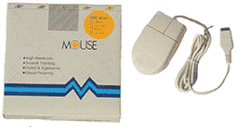
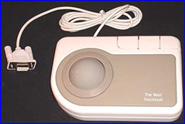
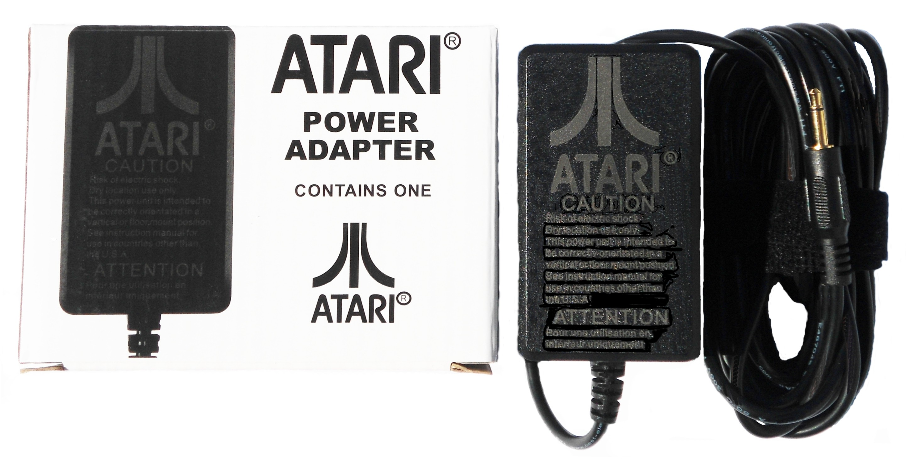
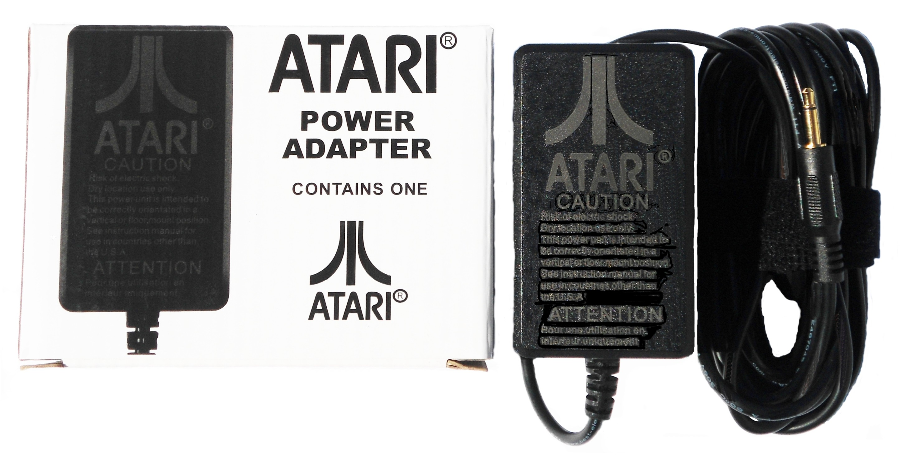

Keyboard
Best’s Custom made Replacement / Upgraded Atari 65XE / 130XE computer Internal Keyboard Mylars. Atari XE stock Internal Keyboard mylars have a close to 100% failure rate. The same Best produced Upgraded / Improved XE Keyboard mylar has a 99.75% Success rate based on over 25+ years of sales now. Atari never made a replacement Mylar, but BEST did
Mouse
Best Electronics TrueMouse, Replacement Mouse for the Atari STM1 Stock Mouse. The TrueMouse has been our bench mark Replacement ST mouse for over 24+ years now. Thousands of World Wide Atari ST owners have found that once you switch over to a Best ST TrueMouse, you will never go back to the Stock Atari STM1 mouse ever again.FCC Class B Approved. CB102079 $49.95


Trackball
The Best TrackBall Why do people love their Best Trackballs? Fast and accurate Cursor movement compared to a standard mouse with less than half the effort. With the right settings, you can cross the whole monitor screen (left to right, top to bottom) with a half a roll of the trackball. PC Version Best Trackball CBT2 $59.95
Joypad
On February 28, 2018 Best Electronics started to work on one of the last Atari made Controllers that Best hadn't upgraded yet... Years later, the Best CX78 JoyPad project is now the most Costly Atari Upgrade project of the last 35+ years, But we believe the final Enhanced Lifetime Gold CX78 JoyPad upgrade kit is worth it. (CB103168)Upgrade instructions included. $36.95
 

Power Supply
After 36+ months work, Best is releasing a second New Atari Auto Switching Power.The New State of the Art, Upgraded / Enhanced Auto switching Atari 2600 Power Supply. Do a quick search on the Internet and see why hundreds of Atari 7800 Owners / Users have purchased the Best 2018 1st Gen. Atari 7800 Auto Switching Power supply.